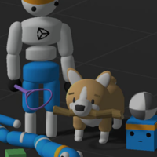
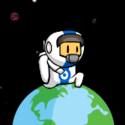
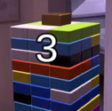

| 기술 | mlagent | VFX | UGS |
|---|---|---|---|
| 기술 설명 | 유니티 ML-Agents는 게임 엔진인 유니티를 통해 제작한 시뮬레이션 환경을 강화학습을 위한 환경으로 만들어주는 도구입니다. | 비주얼 이펙트 그래프는 Unity 프로젝트를 위한 대규모 시각 효과를 구현할 때 사용할 수 있는 패키지입니다. 비주얼 이펙트 그래프는 GPU에서 파티클 동작을 시뮬레이션하므로, 빌트인 파티클 시스템보다 훨씬 더 많은 파티클을 시뮬레이션할 수 있습니다. | UGS는 개발자들이 라이브 게임을 제작하면서 겪는 다양한 문제를 해결할 수 있는 여러 툴을 갖춘 제품입니다. |
| 링크 |  |
| 시네마틱 | 제조 | |
|---|---|---|
| 프로젝트 설명 | 행성 표면에서 뛰어다니며 날아오는 위성과 중간중간 생성되는 폭탄 장애물을 피하며 오래 생존하여 점수를 쌓는 간단한 모바일 게임 | 테트리스를 이용한 젠가 게임으로 젠가 위 에 금색 블록을 떨어트리면 그 사용자가 지는 방식 |
| 어려웠던 점 | 구글 플레이 스토어에 테스트 버전을 올려 테스트를 진행하기로 했고 앱을 올리는 과정에서 문제점이 발생했습니다. | 젠가를 빼는 조작감에 있어 사용자들이 조금 불편한 부분이 있다는 문제가 발생했습니다. |
| 해결 방안 | 유니티에서 에디터 버전을 깔면서 제공되는 SDK, JDK, NDK가 문제였다는 사실을 알게 되었고 호환이 되는 최신 버전을 직접 다운로드해 넣어줌으로써 문제를 해결했습니다. | 팀원들의 테스트를 통해 최적에 움직임을 찾고 적용해 문제점을 해결했습니다. |
| 링크 |  |  |